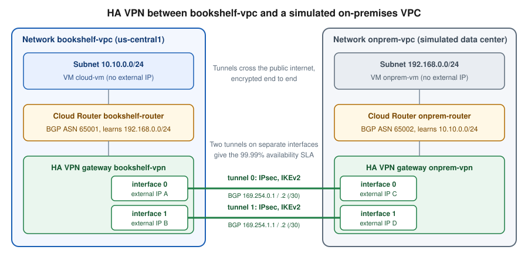

VPN and Hybrid Connectivity
|
This content was generated with the assistance of AI and should be verified against the official documentation before being relied on in production. |
Commands and limits below are current for the gcloud CLI 586.x line (gcloud compute vpn-gateways,
vpn-tunnels, external-vpn-gateways and routers), the Cloud VPN, Cloud Router, Cloud Interconnect, Network
Connectivity Center and Identity-Aware Proxy documentation and release notes published through 2026-09-29, and
Terraform hashicorp/google v8 (checked 2026-09-30); re-verify against gcloud compute vpn-tunnels create --help,
gcloud compute routers add-bgp-peer --help and the linked reference pages before relying on them in a pipeline.
Two different problems hide behind the word "VPN", and Google Cloud treats them very differently.
-
Network-to-network (site-to-site) connectivity joins a VPC network to another network: an office or data center, another cloud, or another VPC. Google Cloud has first-class, managed services for this: Cloud VPN (encrypted tunnels over the internet), Cloud Router (dynamic routing with BGP) and Cloud Interconnect (private physical or partner circuits).
-
User-to-network (point-to-site, client) access lets one person’s laptop reach private resources. Google Cloud has no managed point-to-site or client VPN. There is no counterpart to AWS Client VPN or to Azure VPN Gateway point-to-site. Cloud VPN only connects gateways to gateways, and it cannot terminate a laptop VPN client. Users reach private resources through Identity-Aware Proxy (IAP) TCP forwarding, OS Login, zero-trust access policies, or a VPN server that you run and operate yourself.
This page covers both halves. The first half builds the standard site-to-site topology (HA VPN plus Cloud Router with BGP) end to end in the console and with the gcloud CLI, between the Bookshelf VPC and a second VPC that simulates the on-premises network, and then summarises Cloud Interconnect and Network Connectivity Center. The second half covers the supported user-access alternatives, ending with the Bookshelf administrators reaching the private Cloud SQL instance of Cloud SQL through an IAP tunnel.
Older guides build their VPN with Classic VPN and BGP. That is no longer possible: dynamic (BGP) routing on Classic VPN was deprecated on 2025-08-01, new BGP tunnels cannot be created and existing ones carry no SLA. Only static routing remains on Classic VPN, so the replacement is HA VPN, which is BGP only. The recipe is redone below with HA VPN and the gcloud commands that the book omits.

Choosing a connectivity option
| Option | What it is | Use it when | Main trade-off |
|---|---|---|---|
HA VPN |
IPsec tunnels over the public internet between a Google Cloud gateway with two interfaces and a peer gateway. BGP only. |
You need encrypted connectivity quickly, for a small or medium bandwidth, or a backup path for Interconnect. |
Throughput is capped per tunnel and varies with internet conditions; latency is not guaranteed. |
Classic VPN |
The older single-interface gateway. Static routing only since 2025-08-01. |
Existing static-route tunnels you have not migrated yet. Do not start new work here. |
99.9% SLA at best, no dynamic routing, being phased out. Migrate to HA VPN. |
Dedicated Interconnect |
Physical 10 Gbps or 100 Gbps circuits from your equipment at a colocation facility to Google’s edge. |
High, steady bandwidth and your hardware is already in a supported facility. |
You provision cross-connects and run the BGP routers; lead time of weeks. |
Partner Interconnect |
A service provider links your network to Google over VLAN attachments of 50 Mbps up to tens of Gbps. |
You are not in a Google colocation facility or need less than a full physical port. |
Depends on the provider; provider fees on top of Google’s. |
Cross-Cloud Interconnect |
A Google-managed circuit from your Google Cloud VPC to another cloud provider, with partner variants for some clouds. |
Multicloud architectures with a private path between clouds. |
Limited to supported providers and locations. |
Cross-Site Interconnect |
Layer 2 connectivity between your own sites that rides on Google’s backbone. |
You want Google’s network as the wide-area link between your facilities. |
Specialised; availability is limited to specific locations. |
Network Connectivity Center (NCC) |
A hub-and-spoke control plane that joins VPN tunnels, VLAN attachments, router appliances and VPC networks. |
Several sites or VPCs must exchange routes and traffic through Google’s network. |
An additional layer to design and bill for. |
IAP TCP forwarding |
An HTTPS-wrapped tunnel to a VM port, authorised per user by IAM. |
Administrators need SSH, RDP, a database port or another TCP port on private VMs. |
TCP only, not for bulk transfers, and not a general network-level VPN. |
Which option is available in a given location, and the exact capacities, change over time. Treat the table as a decision aid and confirm details in the Choose a Network Connectivity product page.
Prerequisites
PROJECT_ID=$(gcloud config get-value project)
REGION=us-central1
ZONE=us-central1-a
gcloud services enable \
compute.googleapis.com \
iap.googleapis.com \
networkmanagement.googleapis.com \
secretmanager.googleapis.com \
logging.googleapis.comDerived from Create an HA VPN gateway to a peer VPN gateway and Use IAP for TCP forwarding.
In the console, pick the project in the project picker at the top of the page, then open
Hybrid Connectivity → VPN (or Network Connectivity → VPN, depending on the console version) and click Enable
when the Compute Engine API prompt appears. Cloud Shell has the gcloud CLI, openssl and ssh preinstalled and is
already authenticated as your user, which is all this lab needs.
The caller needs permissions to create networks, routers and VPN resources. The predefined role
roles/compute.networkAdmin covers VPC, Cloud Router and VPN resources. The sections on Secret Manager and IAP need the
roles listed in their own sections.
How HA VPN works
An HA VPN gateway is a regional resource with two interfaces, each with its own external IP address that Google allocates. A tunnel connects one interface to one interface of the peer gateway. Using both interfaces gives redundancy inside Google’s infrastructure, which is what the SLA is measured on:
-
HA VPN to HA VPN (two Google Cloud gateways, or Google Cloud to an HA gateway of another VPC): two tunnels, one per interface pair, give the 99.99% availability SLA.
-
HA VPN to a peer gateway with two interfaces (for example a pair of firewalls, or one device with two interfaces): connect each Google interface to a peer interface for 99.99%, or use four tunnels for the active/active layouts documented in the topology guide.
-
HA VPN to a peer with a single interface: the connection works, but the SLA drops to 99.9%, because the peer becomes the single point of failure.
The SLA applies only when the topology and BGP configuration match the documented 99.99% layouts, including that the two tunnels carry independent BGP sessions. See Cloud VPN topologies.
Key characteristics (re-verify limits in the quotas page):
-
IPsec with IKE. Use IKEv2. HA VPN also supports IKEv1, but only IKEv2 is recommended. The shared secret is a pre-shared key used by both ends.
-
Dynamic routing only. HA VPN requires a Cloud Router and a BGP session per tunnel. There is no static routing option in HA VPN.
-
Encryption. Traffic is encrypted with IPsec, and with NAT traversal on UDP 4500 where the peer sits behind NAT.
-
IPv6. HA VPN supports dual-stack (IPv4 and IPv6) gateways and tunnels through the
--stack-typeoption; check the current launch stage in the release notes. -
Bandwidth per tunnel. A tunnel carries up to about 3 Gbps. Aggregate more by adding tunnels and using ECMP in BGP; a single flow stays on one tunnel.
-
MTU. The gateway MTU is 1460 bytes; larger packets are fragmented or dropped depending on the DF bit. See the troubleshooting section.
-
Cost. Tunnels are billed per tunnel-hour and traffic leaving Google Cloud is billed as internet or inter-region egress; see Pricing.
Cloud Router and BGP in one paragraph
A Cloud Router is a regional, software-defined BGP speaker that runs as part of the control plane, not as a VM.
It exchanges routes with the peer: it advertises subnet ranges of your VPC (or a custom list) and learns the peer’s
prefixes, and it installs them as dynamic routes in the VPC. Each BGP session is a pair of link-local IPv4
addresses in 169.254.0.0/16, typically a /30 per tunnel, one for each side. Each side has a private ASN
(64512 to 65534, or the 32-bit private range 4200000000 to 4294967294). Cloud Router supports BFD (fast
failure detection), MED-style route priorities and custom advertisements, covered in the Cloud Router section.
By default a VPC uses regional dynamic routing, so a Cloud Router only programs learned routes into its own
region. Switch the network to global dynamic routing (--bgp-routing-mode=global) when subnets in other regions
must reach the on-premises prefixes through this region’s tunnels. The Bookshelf lab keeps everything in
us-central1, so regional is enough, but the CLI below sets global explicitly because that is what a real
multi-region deployment needs.
The lab network
The lab creates two custom-mode VPC networks in one project. bookshelf-vpc stands for the Bookshelf production
network; onprem-vpc plays the role of a company data center. Each has a Cloud Router with its own ASN and an HA VPN
gateway, so the two sides are symmetrical. In a real deployment the second side is a physical device or a different
provider’s gateway, and the "external VPN gateway" resource described later represents it.
| Item | bookshelf-vpc (Google Cloud side) | onprem-vpc (simulated on-premises) |
|---|---|---|
Subnet |
|
|
Cloud Router and ASN |
|
|
HA VPN gateway |
|
|
Tunnel 0 and BGP link |
|
|
Tunnel 1 and BGP link |
|
|
Test VM |
|
|
The address ranges must not overlap, because routes are chosen by prefix. Overlapping ranges are one of the most common causes of "the tunnel is up but nothing works".
Generating the shared secrets
Each tunnel is authenticated by a pre-shared key that both ends must hold. The key is a credential: anyone who knows it and can reach the gateway can attempt to impersonate the peer. Never type it into a command in a shell history file, a script in source control, a Terraform file or a ticket. Generate it at run time into a shell variable and store it in Secret Manager so that the other side can retrieve it.
# Strong random secrets, held only in shell variables (never echoed or committed)
SHARED_SECRET_0=$(openssl rand -base64 24)
SHARED_SECRET_1=$(openssl rand -base64 24)
# Keep a copy in Secret Manager so the peer's administrator can retrieve it later
printf '%s' "$SHARED_SECRET_0" | gcloud secrets create bookshelf-vpn-secret-0 \
--replication-policy=automatic --data-file=-
printf '%s' "$SHARED_SECRET_1" | gcloud secrets create bookshelf-vpn-secret-1 \
--replication-policy=automatic --data-file=-Derived from Generate a strong pre-shared key and Create and access secrets.
Notes on handling the secret:
-
The value of a command substitution is not written to shell history, unlike a literal on the command line. Do not add
echo "$SHARED_SECRET_0"to check it. -
--shared-secret "$VAR"passes the value as a process argument, which other users on a shared machine could see withpsfor a moment. Run these commands from Cloud Shell or a dedicated administration host, or use Terraform (see below), whose provider sends the value over the API without exposing it on a command line. -
A new session reads the secrets back with
SHARED_SECRET_0=$(gcloud secrets versions access latest --secret=bookshelf-vpn-secret-0). Only principals withroles/secretmanager.secretAccessoron that secret can do so; see Secret Manager and Cloud KMS. -
openssl rand -base64 24produces 32 random characters. Use at least that much entropy, as the Cloud VPN documentation recommends a strong, random key. -
Rotate the key by creating a new tunnel with a new secret, moving traffic, and deleting the old tunnel, or by updating both ends in a maintenance window; check the Cloud VPN documentation for the current rotation guidance.
Site-to-site with HA VPN and Cloud Router
In the Google Cloud console
The console wizard creates the gateway, tunnels, Cloud Router and BGP sessions in one flow. Do the Google Cloud side
first, then repeat it for onprem-vpc.
-
Create the networks first: open VPC network → VPC networks → Create VPC network, name it
bookshelf-vpc, set Subnet creation mode to Custom, addbookshelf-subnetinus-central1with range10.10.0.0/24, and under Dynamic routing mode select Global. Repeat foronprem-vpcwithonprem-subnetand192.168.0.0/24. -
Open Hybrid Connectivity → VPN (or Network Connectivity → VPN) and click Create VPN connection.
-
Choose High-availability (HA) VPN and click Continue.
-
In VPN gateway enter the name
bookshelf-vpn, select the networkbookshelf-vpcand the regionus-central1, and leave the Stack type at IPv4 unless you need IPv6. Click Create and continue. The page shows the two interface IP addresses; note them. -
Under Peer VPN gateway choose Google Cloud to connect to another HA VPN gateway you own, or choose On-prem or Non Google Cloud to describe an external device (name, interface count, interface IPs).
-
For the lab, create the second gateway
onprem-vpninonprem-vpcfirst, so that you can select it here as the peer gateway. For a real peer, enter its IP addresses and choose Two interfaces if it has two. -
Under Cloud Router click Create new router, name it
bookshelf-routerwith the Google ASN65001, and click Create. -
Click Add VPN tunnel. For each of the two tunnels pick the Google interface and the peer interface, set IKE version to IKEv2, and click Generate in IKE pre-shared key (or paste the key from Secret Manager). Do not reuse the same key for both tunnels.
-
Click Create and continue, then Configure BGP sessions. For each tunnel give the session a name, the peer ASN
65002, and let the console allocate a link-local range such as169.254.0.0/30for tunnel 0 and169.254.1.0/30for tunnel 1. Click Save BGP configuration. -
Click Save BGP configuration and then Create VPN tunnels. Repeat the whole flow on the
onprem-vpcside, choosing the Google gateway as the peer and the same pre-shared keys, with ASN65002and peer ASN65001. -
Open the VPN page and its Cloud VPN tunnels tab. When both ends are configured the Status column shows Established and the BGP session column shows BGP established.
Cloud Shell and the console both work, but the console cannot copy the pre-shared key after creation, so keep the generated value (preferably in Secret Manager) until both ends are configured.
With the gcloud CLI
Start with the networks, subnets and routers. Using one Cloud Router per side keeps the lab symmetrical.
# Networks and subnets (custom mode, global dynamic routing)
gcloud compute networks create bookshelf-vpc \
--subnet-mode=custom --bgp-routing-mode=global
gcloud compute networks subnets create bookshelf-subnet \
--network=bookshelf-vpc --region="$REGION" --range=10.10.0.0/24
gcloud compute networks create onprem-vpc \
--subnet-mode=custom --bgp-routing-mode=global
gcloud compute networks subnets create onprem-subnet \
--network=onprem-vpc --region="$REGION" --range=192.168.0.0/24
# Cloud Routers with distinct private ASNs
gcloud compute routers create bookshelf-router \
--network=bookshelf-vpc --region="$REGION" --asn=65001
gcloud compute routers create onprem-router \
--network=onprem-vpc --region="$REGION" --asn=65002Derived from gcloud compute networks create and gcloud compute routers create.
Create the HA VPN gateways. Each gets two interfaces with allocated external IP addresses.
gcloud compute vpn-gateways create bookshelf-vpn \
--network=bookshelf-vpc --region="$REGION"
gcloud compute vpn-gateways create onprem-vpn \
--network=onprem-vpc --region="$REGION"
# The two interface addresses of each gateway
gcloud compute vpn-gateways describe bookshelf-vpn --region="$REGION" \
--format='table(vpnInterfaces[].id,vpnInterfaces[].ipAddress)'
gcloud compute vpn-gateways describe onprem-vpn --region="$REGION" \
--format='table(vpnInterfaces[].id,vpnInterfaces[].ipAddress)'Derived from gcloud compute vpn-gateways create.
Create the tunnels. Each tunnel connects interface N of one gateway to interface N of the other, reads the router
for the BGP session, and uses the pre-shared key from the variables created earlier. For an IPv6 tunnel, create the
gateway with --stack-type=IPV4_IPV6 and see the HA VPN IPv6 guide.
# Google Cloud side tunnels (to the simulated on-premises HA VPN gateway)
for N in 0 1; do
SECRET_VAR="SHARED_SECRET_$N"
gcloud compute vpn-tunnels create "bookshelf-tunnel-$N" \
--region="$REGION" \
--vpn-gateway=bookshelf-vpn --interface="$N" \
--peer-gcp-gateway=onprem-vpn \
--router=bookshelf-router \
--ike-version=2 \
--shared-secret="${!SECRET_VAR}"
done
# Simulated on-premises side tunnels (to the Google Cloud HA VPN gateway)
for N in 0 1; do
SECRET_VAR="SHARED_SECRET_$N"
gcloud compute vpn-tunnels create "onprem-tunnel-$N" \
--region="$REGION" \
--vpn-gateway=onprem-vpn --interface="$N" \
--peer-gcp-gateway=bookshelf-vpn \
--router=onprem-router \
--ike-version=2 \
--shared-secret="${!SECRET_VAR}"
doneThe ${!SECRET_VAR} expansion is Bash indirect expansion: it reads SHARED_SECRET_0 and SHARED_SECRET_1 by name,
so the loop never contains a literal secret. In zsh use ${(P)SECRET_VAR} instead. The key for tunnel 0 must be the
same on both sides, and different from the key for tunnel 1.
Add the router interfaces and BGP peers. Each tunnel needs a router interface with one link-local address of its /30 and a BGP peer that points to the other address.
for N in 0 1; do
# Google Cloud side: .1 of each /30, peer is .2
gcloud compute routers add-interface bookshelf-router \
--region="$REGION" --interface-name="if-tunnel-$N" \
--vpn-tunnel="bookshelf-tunnel-$N" \
--ip-address="169.254.$N.1" --mask-length=30
gcloud compute routers add-bgp-peer bookshelf-router \
--region="$REGION" --peer-name="peer-onprem-$N" \
--interface="if-tunnel-$N" \
--peer-ip-address="169.254.$N.2" --peer-asn=65002
# Simulated on-premises side: .2 of each /30, peer is .1
gcloud compute routers add-interface onprem-router \
--region="$REGION" --interface-name="if-tunnel-$N" \
--vpn-tunnel="onprem-tunnel-$N" \
--ip-address="169.254.$N.2" --mask-length=30
gcloud compute routers add-bgp-peer onprem-router \
--region="$REGION" --peer-name="peer-bookshelf-$N" \
--interface="if-tunnel-$N" \
--peer-ip-address="169.254.$N.1" --peer-asn=65001
doneDerived from gcloud compute routers add-interface and gcloud compute routers add-bgp-peer.
When the peer is a Google Cloud gateway you can let Google choose the link-local addresses and the peer, but the
explicit form above is clearer when you later hand the same values to an on-premises network engineer. The addresses
must come from 169.254.0.0/16, must not collide with each other or with reserved ranges, and are not routable
outside the session.
Checking status
# Tunnel state and details (expect ESTABLISHED)
gcloud compute vpn-tunnels describe bookshelf-tunnel-0 --region="$REGION" \
--format='value(status,detailedStatus)'
gcloud compute vpn-tunnels list --filter="region:$REGION" \
--format='table(name,status,peerIp,ikeVersion)'
# BGP sessions and learned routes
gcloud compute routers get-status bookshelf-router --region="$REGION" \
--format='yaml(result.bgpPeerStatus,result.bestRoutes)'
gcloud compute routers get-status bookshelf-router --region="$REGION" \
--format='table(result.bgpPeerStatus[].name,result.bgpPeerStatus[].state,result.bgpPeerStatus[].status,result.bgpPeerStatus[].numLearnedRoutes)'Derived from gcloud compute vpn-tunnels describe and gcloud compute routers get-status.
Tunnel status moves through PROVISIONING, WAITING_FOR_FULL_CONFIG (the other end does not exist yet),
FIRST_HANDSHAKE, NO_INCOMING_PACKETS and finally ESTABLISHED. detailedStatus explains a stuck state in words.
A BGP peer reports state of Established and status of UP when it exchanges routes. The route should be
192.168.0.0/24 on bookshelf-router. The VPC route table (VPC network → Routes) now shows dynamic routes whose
next hop is the tunnel.
Firewalls and test VMs
A tunnel only carries packets; the VPC firewall still decides what reaches a VM. Create allow rules in both networks for ICMP and SSH from the peer range, and two VMs without external IP addresses to test with. SSH to the test VMs uses IAP, which is the same mechanism introduced in the user-access section below.
gcloud compute firewall-rules create bookshelf-allow-from-onprem \
--network=bookshelf-vpc --direction=INGRESS --action=ALLOW \
--rules=icmp,tcp:22 --source-ranges=192.168.0.0/24
gcloud compute firewall-rules create onprem-allow-from-bookshelf \
--network=onprem-vpc --direction=INGRESS --action=ALLOW \
--rules=icmp,tcp:22 --source-ranges=10.10.0.0/24
# Allow IAP's source range so you can SSH to the private test VMs
gcloud compute firewall-rules create bookshelf-allow-iap-ssh \
--network=bookshelf-vpc --direction=INGRESS --action=ALLOW \
--rules=tcp:22 --source-ranges=35.235.240.0/20
gcloud compute firewall-rules create onprem-allow-iap-ssh \
--network=onprem-vpc --direction=INGRESS --action=ALLOW \
--rules=tcp:22 --source-ranges=35.235.240.0/20
gcloud compute instances create cloud-vm --zone="$ZONE" \
--machine-type=e2-micro --subnet=bookshelf-subnet --no-address
gcloud compute instances create onprem-vm --zone="$ZONE" \
--machine-type=e2-micro --subnet=onprem-subnet --no-address
CLOUD_VM_IP=$(gcloud compute instances describe cloud-vm --zone="$ZONE" \
--format='value(networkInterfaces[0].networkIP)')
# From the simulated on-premises VM, ping the Google Cloud VM across the tunnels
gcloud compute ssh onprem-vm --zone="$ZONE" --tunnel-through-iap \
--command="ping -c 3 $CLOUD_VM_IP"Derived from Check VPN tunnel status, Use VPC firewall rules and Use IAP for TCP forwarding.
The e2-micro machine type keeps the lab cheap; use the image family that gcloud compute instances create selects
by default, rather than the long-retired ubuntu-1604-lts family the book uses. Successful replies from the
10.10.0.0/24 side prove that BGP learned the routes, the tunnels carry traffic and the firewall rules match.
The same topology in Terraform
variable "vpn_shared_secret_0" {
type = string
sensitive = true # supply with TF_VAR_vpn_shared_secret_0, never in a .tf or .tfvars file
}
variable "vpn_shared_secret_1" {
type = string
sensitive = true
}
resource "google_compute_ha_vpn_gateway" "bookshelf" {
name = "bookshelf-vpn"
region = "us-central1"
network = google_compute_network.bookshelf.id
}
resource "google_compute_ha_vpn_gateway" "onprem" {
name = "onprem-vpn"
region = "us-central1"
network = google_compute_network.onprem.id
}
resource "google_compute_router" "bookshelf" {
name = "bookshelf-router"
region = "us-central1"
network = google_compute_network.bookshelf.id
bgp {
asn = 65001
}
}
resource "google_compute_vpn_tunnel" "bookshelf" {
count = 2
name = "bookshelf-tunnel-${count.index}"
region = "us-central1"
vpn_gateway = google_compute_ha_vpn_gateway.bookshelf.id
vpn_gateway_interface = count.index
peer_gcp_gateway = google_compute_ha_vpn_gateway.onprem.id
router = google_compute_router.bookshelf.id
ike_version = 2
shared_secret = count.index == 0 ? var.vpn_shared_secret_0 : var.vpn_shared_secret_1
}
resource "google_compute_router_interface" "bookshelf" {
count = 2
name = "if-tunnel-${count.index}"
router = google_compute_router.bookshelf.name
region = "us-central1"
ip_range = "169.254.${count.index}.1/30"
vpn_tunnel = google_compute_vpn_tunnel.bookshelf[count.index].name
}
resource "google_compute_router_peer" "bookshelf" {
count = 2
name = "peer-onprem-${count.index}"
router = google_compute_router.bookshelf.name
region = "us-central1"
peer_ip_address = "169.254.${count.index}.2"
peer_asn = 65002
interface = google_compute_router_interface.bookshelf[count.index].name
}Derived from the Terraform Registry pages for google_compute_ha_vpn_gateway, google_compute_vpn_tunnel, google_compute_router_interface and google_compute_router_peer.
The on-premises half mirrors this with onprem and 65002. The secret ends up in Terraform state even when the
variable is sensitive, so keep the state in a restricted Cloud Storage bucket with versioning and CMEK; see
Infrastructure as Code.
Connecting to a real on-premises device
With a physical or third-party gateway there is no second Google gateway to reference. Describe it with an external VPN gateway resource and point the tunnels at it.
# The on-premises gateway has two public interfaces (placeholder documentation addresses)
gcloud compute external-vpn-gateways create onprem-device \
--interfaces=0=203.0.113.10,1=203.0.113.20
gcloud compute vpn-tunnels create bookshelf-to-onprem-0 \
--region="$REGION" \
--vpn-gateway=bookshelf-vpn --interface=0 \
--peer-external-gateway=onprem-device --peer-external-gateway-interface=0 \
--router=bookshelf-router --ike-version=2 \
--shared-secret="$SHARED_SECRET_0"
gcloud compute vpn-tunnels create bookshelf-to-onprem-1 \
--region="$REGION" \
--vpn-gateway=bookshelf-vpn --interface=1 \
--peer-external-gateway=onprem-device --peer-external-gateway-interface=1 \
--router=bookshelf-router --ike-version=2 \
--shared-secret="$SHARED_SECRET_1"Derived from gcloud compute external-vpn-gateways create and Create an HA VPN gateway to a peer VPN gateway.
The interface count (one, two or four) tells Google which of the documented topologies applies. The addresses above
come from the documentation range 203.0.113.0/24; replace them with your device’s public addresses. After creating
the Google side, download or copy the generated settings (IKE version, shared secret, tunnel and BGP addresses,
cipher suites) into the on-premises device’s configuration. The peer must accept one of the IKE phase 1 and phase 2
cipher sets that Google supports. Most enterprise firewalls and router vendors publish a Google Cloud HA VPN
configuration guide. Remember that the on-premises device needs its own BGP configuration with 169.254.N.2 as its
local address and ASN, and that Cloud Router will only learn prefixes the device advertises.
Cloud Router: advertisements, BFD and route priority
By default a Cloud Router advertises every subnet range of the VPC (all regions, if the network uses global dynamic routing) and nothing else. Tune it with these options.
# Custom advertisements: only the subnet, plus one extra prefix
gcloud compute routers update bookshelf-router --region="$REGION" \
--advertisement-mode=custom \
--set-advertisement-groups=all_subnets \
--set-advertisement-ranges=10.50.0.0/16
# Prefer tunnel 0: a lower advertised priority (MED) wins on the peer side
gcloud compute routers update-bgp-peer bookshelf-router --region="$REGION" \
--peer-name=peer-onprem-0 --advertised-route-priority=100
gcloud compute routers update-bgp-peer bookshelf-router --region="$REGION" \
--peer-name=peer-onprem-1 --advertised-route-priority=200
# Fast failure detection with BFD (the peer must support it too)
gcloud compute routers update-bgp-peer bookshelf-router --region="$REGION" \
--peer-name=peer-onprem-0 \
--bfd-session-initialization-mode=ACTIVE \
--bfd-min-transmit-interval=1000 --bfd-min-receive-interval=1000 \
--bfd-multiplier=5Derived from Advertised routes, Bidirectional Forwarding Detection and gcloud compute routers update-bgp-peer.
-
Custom advertisement replaces the default and lets you hide subnets, summarise prefixes, or advertise ranges that are not subnets (for example a Private Service Connect range). Leaving out the all-subnets group means the peer will not learn them, so be explicit.
-
MED (advertised route priority) controls which tunnel the peer prefers for return traffic. Equal priorities give ECMP across tunnels, which is the right setting for active/active and the wrong one if the peer cannot balance symmetrically. A lower value is preferred.
-
BFD lowers BGP failure detection from the BGP hold timer (tens of seconds) to a few seconds. The supported timer values and the interaction with graceful restart are in the BFD documentation.
-
Graceful restart is enabled on Cloud Router and keeps traffic flowing for a short time while the peer restarts.
-
Route limits. There are limits on learned prefixes per BGP session and per Cloud Router; see the quotas page and aggregate prefixes on the peer when needed.
Classic VPN
Classic VPN gateways have one interface and a 99.9% SLA. Since 2025-08-01 Google no longer lets you create Classic VPN tunnels that use dynamic (BGP) routing, and existing BGP tunnels have no SLA; Classic VPN with policy-based or route-based static routing is what remains. A static Classic VPN tunnel is a quick way to attach a small site that cannot run BGP, but it has no failover without manual route changes. New designs use HA VPN. Google’s migration guide explains how to move a Classic tunnel to HA VPN by building the HA gateway beside it and shifting traffic with route priorities, which avoids an outage.
Cloud Interconnect
Cloud Interconnect connects your network to Google without crossing the public internet. It has more bandwidth, lower and steadier latency and, for some products, SLAs that VPN cannot offer. It does not encrypt traffic by default.
| Product | Shape | Notes |
|---|---|---|
Dedicated Interconnect |
Your router connects to Google’s edge router in a colocation facility with 10 Gbps or 100 Gbps connections, bundled into a link aggregation group (LAG). |
You order the connection, sign a letter of authorisation, create VLAN attachments for each VPC and Cloud Router and run BGP. MACsec encryption is available on supported connections. |
Partner Interconnect |
A supported service provider connects you to Google. You create VLAN attachments of 50 Mbps to tens of Gbps. |
Layer 2 or Layer 3 provider models. The provider sets the available locations and bandwidths. |
Cross-Cloud Interconnect |
Google provisions the connection between Google Cloud and another cloud provider’s network. Partner Cross-Cloud Interconnect does the same through a partner for AWS and OCI. |
Useful for multicloud data paths; confirm which providers and metros are currently supported. |
Cross-Site Interconnect |
A Layer 2 service between your own sites using Google’s backbone. |
Created more recently; check the launch stage and locations in the documentation before planning around it. |
Interconnect availability depends on topology. A single connection has no SLA; two connections in one metro give a SLA of 99.9%, and four connections spread over two metros give an SLA of 99.99%.
HA VPN over Cloud Interconnect
To encrypt traffic that crosses Partner or Dedicated Interconnect, create IPsec-encrypted VLAN attachments
(--encryption=IPSEC) and build HA VPN tunnels whose peers are the addresses reached over the Interconnect, not the
internet. You get private, encrypted traffic without MACsec, at the capacity of the VPN gateways. It is also the
usual way to satisfy "must be encrypted in transit" policies on a partner connection.
Network Connectivity Center
Network Connectivity Center (NCC) is a hub-and-spoke service. You create a hub, then attach spokes: HA VPN tunnels, VLAN attachments, router appliances (virtual network appliances) and VPC networks. Spokes in the same hub can exchange routes through Google’s backbone, which turns a set of point-to-point connections into a managed site-to-site network, so two branch offices can reach one another over Google instead of through your data center. The hybrid-spoke feature of NCC is the one relevant to this page; see Network Connectivity Center overview.
gcloud services enable networkconnectivity.googleapis.com
gcloud network-connectivity hubs create bookshelf-hub \
--description="Bookshelf hub"
gcloud network-connectivity spokes linked-vpn-tunnels create onprem-spoke \
--hub=bookshelf-hub --region="$REGION" \
--vpn-tunnels=bookshelf-tunnel-0,bookshelf-tunnel-1 \
--site-to-site-data-transferDerived from Create hybrid spokes.
Enabling site-to-site data transfer lets one hybrid spoke reach another through Google’s network; without it, the spokes only reach VPC spokes. NCC is billed separately for spokes and data transfer, so confirm that you need the hub before adding it to a two-site lab.
User access: no managed client VPN
Google Cloud has no managed point-to-site VPN, so a laptop cannot dial in to a VPC the way it can with AWS Client VPN or an Azure VPN gateway. The Cloud VPN product is exclusively gateway-to-gateway. Do not look for a "client VPN" setting; it does not exist, and tutorials that suggest one are describing something else. The supported alternatives, in order of preference:
| Alternative | What it gives users | Trade-off |
|---|---|---|
IAP TCP forwarding |
Per-user, IAM-authorised tunnels to a TCP port of a VM that has no public IP: SSH, RDP, a database port. |
Only TCP, per port; not a network-level VPN and not for bulk transfer. |
OS Login |
SSH keys and Linux accounts managed by IAM instead of copying keys into VM metadata. |
Authorises logins; it does not provide connectivity by itself. |
Chrome Enterprise Premium (formerly BeyondCorp Enterprise) |
Context-aware, zero-trust access policies for IAP-protected resources, based on user, device and location. |
A paid subscription; applies to resources behind IAP, not to arbitrary network traffic. |
Self-managed VPN server (WireGuard, OpenVPN) |
A true client VPN: users connect with a VPN client and reach the whole subnet. |
You patch, scale, back up, monitor and secure the VM. It becomes critical infrastructure. |
Marketplace network appliance or partner ZTNA |
A supported commercial VPN or zero-trust product. |
Licensing cost and the vendor’s own operations model. |
IAP TCP forwarding
Identity-Aware Proxy TCP forwarding wraps a TCP connection in an authenticated HTTPS tunnel. The user runs
gcloud compute start-iap-tunnel (or gcloud compute ssh --tunnel-through-iap); the command authenticates with their
Google identity, IAP checks IAM, and IAP connects from the range 35.235.240.0/20 to the VM’s internal IP. The VM
needs no external IP address and no inbound rule from the internet.
The flow follows IAP TCP forwarding overview.
In the Google Cloud console
-
Open Security → Identity-Aware Proxy and select the SSH and TCP Resources tab. The console lists the VMs that can be reached through IAP.
-
Select the VM, click Add principal in the side panel, choose the administrator’s group, and give it the role IAP-secured Tunnel User.
-
Open VPC network → Firewall → Create firewall rule. Create an ingress rule that allows
tcp:22(andtcp:3389for RDP or the database port you need) from the source range35.235.240.0/20, and target it to the VM by tag or service account. -
Open Compute Engine → VM instances, and in the Connect column choose SSH, or run the CLI commands below. The first connection from the browser uses IAP automatically for a VM without an external address.
With the gcloud CLI
ADMINS=group:bookshelf-admins@example.com
# 1. Allow IAP's range to reach SSH (and the database tunnel port)
gcloud compute firewall-rules create bookshelf-allow-iap-admin \
--network=bookshelf-vpc --direction=INGRESS --action=ALLOW \
--rules=tcp:22 --source-ranges=35.235.240.0/20 \
--target-tags=bastion
# 2. Let administrators open tunnels to that VM, nothing wider
gcloud compute instances add-iam-policy-binding cloud-vm --zone="$ZONE" \
--member="$ADMINS" --role=roles/iap.tunnelResourceAccessor
# 3. SSH through IAP, no external address involved
gcloud compute ssh cloud-vm --zone="$ZONE" --tunnel-through-iap
# 4. A raw port forward: local 2222 to the VM's SSH port
gcloud compute start-iap-tunnel cloud-vm 22 \
--local-host-port=localhost:2222 --zone="$ZONE"Derived from Use IAP for TCP forwarding and gcloud compute start-iap-tunnel.
Notes:
-
The role
roles/iap.tunnelResourceAccessor(IAP-secured Tunnel User) can be granted on the project, on a VM, or conditionally on a resource tag. Granting it on a single VM is the least-privilege form. -
IAP authorises opening the tunnel, but the connection still needs OS-level authentication (an SSH key through OS Login, or an RDP password). That is by design: two independent checks.
-
Use
--tunnel-through-iapfor SSH. Usestart-iap-tunnelfor everything else. -
Throughput through IAP is intended for administration, not for moving large datasets, and long-lived tunnels can be reset by IAP. For bulk transfers use VPN, Interconnect or Cloud Storage.
-
On Windows, IAP Desktop is a free Google-provided client that manages RDP and SSH through IAP, so Windows administrators do not need to open tunnels by hand.
-
Manage SSH keys through OS Login (below) rather than adding keys to metadata.
-
IAP records access in the Cloud Audit Logs; filter on the IAP service to see who opened which tunnel.
OS Login
OS Login ties Linux account creation and SSH authorisation to IAM and the user’s Google identity. It replaces the manual practice of copying public keys into project or instance metadata. You enable it per project or per VM and then grant roles.
# Enable OS Login for every VM in the project (optionally 2-step verification)
gcloud compute project-info add-metadata \
--metadata=enable-oslogin=TRUE
# Regular login or administrator login (sudo)
gcloud projects add-iam-policy-binding "$PROJECT_ID" \
--member="$ADMINS" --role=roles/compute.osLogin
gcloud projects add-iam-policy-binding "$PROJECT_ID" \
--member=group:bookshelf-sre@example.com --role=roles/compute.osAdminLogin
# A VM that runs as a service account also needs the user role on that service account
gcloud iam service-accounts add-iam-policy-binding \
"bookshelf-vm@${PROJECT_ID}.iam.gserviceaccount.com" \
--member="$ADMINS" --role=roles/iam.serviceAccountUserDerived from Set up OS Login and OS Login.
Combining OS Login with IAP gives a full replacement for a bastion with shared keys: IAM decides who can open a
tunnel, OS Login decides who can log in, and Cloud Audit Logs record both. Add the metadata key enable-oslogin-2fa
to require 2-step verification, and use roles/compute.osAdminLogin sparingly. See
Identity and Access and Compute Engine.
Chrome Enterprise Premium
Chrome Enterprise Premium (formerly BeyondCorp Enterprise) adds context-aware conditions to IAP: the policy can require a managed device, a minimum OS version, a corporate network or a country. It is built on Access Context Manager access levels attached to IAM conditions on IAP-protected resources, including IAP TCP forwarding. It is a subscription, and it is the Google-supported path to a zero-trust access model without a flat network VPN. See Securing virtual machines with Chrome Enterprise Premium.
A self-managed VPN server
When users really need a layer-3 VPN client (a developer who must reach many private ports, or a non-TCP protocol), run the server yourself. The usual choices are WireGuard, OpenVPN, or a Marketplace image of a commercial product.
gcloud compute addresses create bookshelf-vpn-ip --region="$REGION"
gcloud compute instances create vpn-server --zone="$ZONE" \
--machine-type=e2-small --subnet=bookshelf-subnet \
--address=bookshelf-vpn-ip \
--can-ip-forward --tags=vpn-server
gcloud compute firewall-rules create bookshelf-allow-wireguard \
--network=bookshelf-vpc --direction=INGRESS --action=ALLOW \
--rules=udp:51820 --target-tags=vpn-serverDerived from Reserve a static external IP address, gcloud compute instances create and Use VPC firewall rules.
The VM needs --can-ip-forward so that it can route packets that are not addressed to it, and the WireGuard or
OpenVPN software configured to forward and masquerade client traffic. Keep the trade-offs in view:
-
Operations. You patch the OS and the VPN software, rotate client keys, monitor and back up the configuration.
-
Availability. One VM is a single point of failure; a managed instance group with a static IP and health checks is more work than it looks.
-
Authentication. Client identity is whatever you wire up (static keys, certificates, an identity provider). It will not follow IAM unless you integrate it.
-
Throughput is limited by the VM’s machine type, and client traffic counts as egress from the VM.
-
Compliance. The VPN host is a high-value target; harden it, restrict its service account, and log access.
For many teams IAP plus OS Login removes the need for this server. Choose a VPN only when the use case demands it.
The Bookshelf: administrators reaching private Cloud SQL
In the Bookshelf scenario the Cloud SQL instance bookshelf-catalog has only a private IP (see
Cloud SQL). A DBA still needs to run a migration or an EXPLAIN from a laptop. There
is no client VPN to dial in, so the path is: laptop, IAP tunnel to a small bastion VM inside bookshelf-vpc, and from
the bastion the Cloud SQL Auth Proxy (with --private-ip) to the instance.
# On the bastion VM (created with --tags=bastion and a service account holding roles/cloudsql.client):
./cloud-sql-proxy --private-ip --address 127.0.0.1 --port 5432 \
"$PROJECT_ID:$REGION:bookshelf-catalog"
# On the administrator's laptop: forward local 5432 through IAP and SSH to the proxy on the bastion
gcloud compute ssh bastion --zone="$ZONE" --tunnel-through-iap -- \
-N -L 5432:127.0.0.1:5432
# In another terminal, connect as if the database were local
psql "host=127.0.0.1 port=5432 dbname=catalog user=catalog_admin"Derived from Connect using the Cloud SQL Auth Proxy and Use IAP for TCP forwarding.
The bastion’s service account needs roles/cloudsql.client and the Cloud SQL Admin API enabled. The proxy
authenticates to Cloud SQL with that account’s identity and ADC, so no database IP allow list and no service-account
key file are involved. The database password still has to come from somewhere; read it from Secret Manager
(catalog-db-password) or use IAM database authentication, never a literal in a script. For a local Spring Boot
application, point the datasource at the forwarded port and keep the password in an environment variable:
spring.datasource.url=jdbc:postgresql://127.0.0.1:5432/catalog
spring.datasource.username=catalog_admin
spring.datasource.password=${CATALOG_DB_PASSWORD}Derived from Connect using the Cloud SQL Auth Proxy; the property sources are explained in Configuration and Profiles. Applications that run inside Google Cloud should connect with the Cloud SQL Java connector or a private IP instead, as described on the Cloud SQL page.
Observability and troubleshooting
Logs and metrics
Cloud VPN writes tunnel and IKE events to Cloud Logging under the monitored resource vpn_gateway, and Cloud Router
logs BGP state changes. Metrics such as tunnel established state, bytes and packets, and dropped packets are in Cloud
Monitoring under vpn.googleapis.com and router.googleapis.com; build an alert on the tunnel-established metric and
on the BGP session state. See Monitoring and Observability.
gcloud logging read \
'resource.type="vpn_gateway" AND resource.labels.gateway_id:*' \
--limit=20 --format='table(timestamp,severity,jsonPayload.message)'
# Reachability analysis without sending packets
gcloud network-management connectivity-tests create onprem-to-cloud \
--source-instance="projects/$PROJECT_ID/zones/$ZONE/instances/onprem-vm" \
--destination-instance="projects/$PROJECT_ID/zones/$ZONE/instances/cloud-vm" \
--protocol=ICMP
gcloud network-management connectivity-tests describe onprem-to-cloud \
--format='yaml(reachabilityDetails)'Common problems
| Symptom | Likely causes | What to check |
|---|---|---|
Tunnel stuck in |
The peer end does not exist yet or has the wrong peer IP; UDP 500 or 4500 blocked; shared secrets differ. |
|
|
IKE version or cipher mismatch; wrong pre-shared key; peer behind NAT without NAT-T; asymmetric tunnel numbering. |
Cloud Logging for |
Tunnel |
Wrong link-local addresses or peer ASN; the peer does not run BGP; BGP port TCP 179 filtered; MD5 mismatch if used. |
|
BGP up but no routes learned |
The peer advertises nothing, or advertises prefixes that overlap your VPC; custom advertisements exclude your subnet. |
|
Pings work, TCP stalls or large transfers hang |
MTU and fragmentation; PMTUD blocked by an ICMP filter. |
Lower the MTU or MSS on the peer; allow ICMP "fragmentation needed"; test with |
Only one tunnel carries traffic |
Different MED or local preference; ECMP not enabled on the peer; one BGP session down. |
Advertised route priorities and |
Traffic reaches the VM but replies are dropped |
VPC firewall denies the peer range; asymmetric routing through another path. |
Firewall Rules Logging, Connectivity Tests, VPC Flow Logs. |
|
Missing firewall rule for |
The firewall rule, |
About MTU: the default VPC MTU is 1460 bytes and the HA VPN gateway MTU is also 1460, which deliberately leaves room for the IPsec overhead. A VPC configured with MTU 1500 or 8896 sends larger packets that the VPN cannot carry without fragmentation. Keep VPCs at 1460 for VPN traffic or clamp the TCP MSS on the tunnel. Interconnect VLAN attachments support their own MTU options (check the product page), which is one reason hybrid designs standardise on 1460 for simplicity.
Pricing model
All prices change; see the dated pages Cloud VPN pricing, Cloud Interconnect pricing and VPC network pricing (reviewed 2026-09-30) and use the pricing calculator for estimates. No numbers are repeated here.
-
HA VPN is billed per tunnel-hour while a tunnel exists. Two tunnels per gateway are the minimum for the SLA, so the standing cost is a small, predictable multiple of the tunnel rate. Check the pricing page for how Cloud Router and idle gateways are billed.
-
Data transfer. Traffic leaving Google Cloud through a tunnel is billed at internet egress rates (or inter-region rates, depending on the path). Ingress is free. A chatty replication job is where the bill grows.
-
Interconnect adds a charge per port (Dedicated) or per VLAN attachment (Partner), plus the data transfer charge, which is lower than internet egress. Partner fees, colocation space and cross-connect fees are separate.
-
Network Connectivity Center bills for hub spokes and for data processed between spokes.
-
IAP TCP forwarding has no per-connection charge; Chrome Enterprise Premium is a per-user subscription.
-
A self-managed VPN VM costs the VM, its disk, its static IP address (billed while idle if unattached) and the egress it generates, plus your time.
There is no free tier for Cloud VPN or Interconnect. The lab below runs for an hour or two at a small cost, so clean it up.
Quotas, limits and launch stages
-
Check the Cloud VPN quotas for tunnels per gateway, gateways per region, and the bandwidth per tunnel, and the Cloud Router quotas for BGP peers, learned routes and advertised prefixes. Request an increase in IAM & Admin → Quotas & System Limits.
-
HA VPN and Cloud Router are generally available. Features such as IPv6 over VPN, NCC spokes and Cross-Site Interconnect have moved through Preview in recent years; look at the release notes for the current stage before committing to one in production. Preview features carry no SLA and can change.
-
HA VPN requires a Cloud Router, and HA VPN tunnels cannot use static routes.
-
One HA VPN gateway belongs to one VPC network and one region.
-
Classic VPN dynamic routing was deprecated on 2025-08-01.
Security checklist
-
Generate every pre-shared key at run time with
openssl rand -base64 24(or longer), keep it in Secret Manager, and never commit it. -
Use IKEv2 and the strongest cipher suite both ends support. Remove weak or legacy ciphers on the on-premises device.
-
Limit who can create tunnels:
roles/compute.networkAdminis powerful. Use custom roles or IAM conditions, and organisation policies such ascompute.restrictVpnPeerIPsto constrain which peer addresses are allowed. -
Allow only the prefixes you need in both directions. A broad advertisement turns the VPN into a flat network.
-
Apply VPC firewall rules (or firewall policies) to traffic arriving through the tunnel; the VPN does not filter by itself. See VPC Networking on Google Cloud.
-
Prefer IAP and OS Login for administrators over opening SSH to the world or sharing a bastion key.
-
Send VPN and IAP logs to a restricted log bucket and alert on tunnel-down and BGP-down events.
Clean up
Delete in dependency order. Tunnels reference the router and gateway, so remove the BGP peers and interfaces, then the tunnels, then the routers and gateways, then the VMs and networks. Skip commands for resources you did not create.
# VMs and firewall rules
gcloud compute instances delete cloud-vm onprem-vm --zone="$ZONE" --quiet
gcloud compute instances delete vpn-server bastion --zone="$ZONE" --quiet
gcloud compute firewall-rules delete \
bookshelf-allow-from-onprem onprem-allow-from-bookshelf \
bookshelf-allow-iap-ssh onprem-allow-iap-ssh \
bookshelf-allow-iap-admin bookshelf-allow-wireguard --quiet
gcloud compute addresses delete bookshelf-vpn-ip --region="$REGION" --quiet
# Network Connectivity Center (only if created)
gcloud network-connectivity spokes delete onprem-spoke --region="$REGION" --quiet
gcloud network-connectivity hubs delete bookshelf-hub --quiet
# BGP peers, router interfaces and tunnels (both sides)
for N in 0 1; do
gcloud compute routers remove-bgp-peer bookshelf-router --region="$REGION" --peer-name="peer-onprem-$N"
gcloud compute routers remove-interface bookshelf-router --region="$REGION" --interface-name="if-tunnel-$N"
gcloud compute routers remove-bgp-peer onprem-router --region="$REGION" --peer-name="peer-bookshelf-$N"
gcloud compute routers remove-interface onprem-router --region="$REGION" --interface-name="if-tunnel-$N"
gcloud compute vpn-tunnels delete "bookshelf-tunnel-$N" "onprem-tunnel-$N" --region="$REGION" --quiet
done
# Routers, gateways, external gateway description
gcloud compute routers delete bookshelf-router onprem-router --region="$REGION" --quiet
gcloud compute vpn-gateways delete bookshelf-vpn onprem-vpn --region="$REGION" --quiet
gcloud compute external-vpn-gateways delete onprem-device --quiet
# Subnets and networks
gcloud compute networks subnets delete bookshelf-subnet onprem-subnet --region="$REGION" --quiet
gcloud compute networks delete bookshelf-vpc onprem-vpc --quiet
# Shared secrets in Secret Manager (all versions; cannot be undone)
gcloud secrets delete bookshelf-vpn-secret-0 --quiet
gcloud secrets delete bookshelf-vpn-secret-1 --quiet
# Local variables
unset SHARED_SECRET_0 SHARED_SECRET_1Derived from gcloud compute vpn-tunnels delete, gcloud compute routers delete and gcloud compute vpn-gateways delete.
Deleting bookshelf-vpc fails while any subnet, route, firewall rule, router or VM still references it; read the error
to find what remains. Dynamic routes learned over BGP disappear with the tunnel. If you tested the IAP or OS Login
sections, revoke the bindings with remove-iam-policy-binding and remove the enable-oslogin project metadata if
you do not want it to stay on. The bookshelf-catalog instance and its proxy bastion belong to the Cloud SQL lab, not
to this one. For a throwaway project, deleting the project schedules everything for deletion with the usual 30-day
recovery window (see Resource Hierarchy and Projects).
Related pages
-
VPC Networking on Google Cloud — VPC networks, firewalls, Cloud NAT and Private Service Connect.
-
Cloud SQL — the private Cloud SQL instance that administrators reach through IAP.
-
Compute Engine — VMs, OS Login and startup scripts.
-
Identity and Access — IAM roles, conditions and organisation policy.
-
Secret Manager and Cloud KMS — storing the pre-shared keys.
-
Infrastructure as Code — Terraform state and Infrastructure Manager.
-
Monitoring and Observability — alerting on tunnels and BGP sessions.
-
Governance, Security and Compliance — organisation policy and VPC Service Controls.
-
AWS (Amazon Web Services) and Azure — the AWS and Azure VPN services, which do include a managed client VPN.